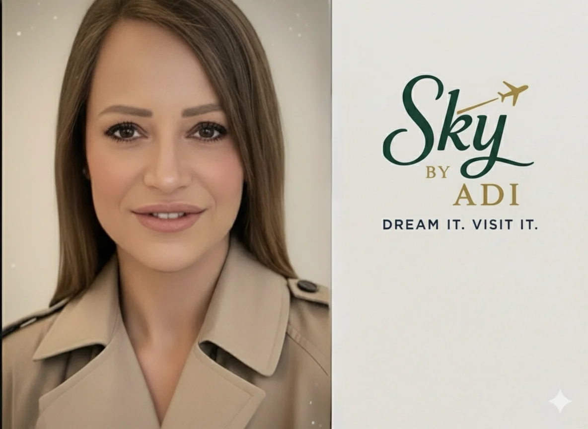

SKY BY ADI AHARONI
מנוע התוכן · חודש השקה
סקיצת 9 פוסטי הפתיחה לאישור, התוכן המלא של כל פוסט, 6 רילים מוכנים-לצילום, ולוח 30 יום. הכל לפי נוסחת הסליקה (עצירה ← הזדהות ← תחושה ← הוכחה ← פעולה) ו-6 העקרונות של בוסקילה.
1 · סקיצת הגריד - 9 פוסטי ההשקה
ככה ייראה הדף ב-9 הפוסטים הראשונים. סלע יחיד = משבצת ה-87% (כחול). הוק ביוטי = משבצת 3. עדי = משבצת 8. כל 3 הסגמנטים מיוצגים.
1קרוסלה סנטוריני · יוון
סנטוריני · יוון
סנטוריני · יוון"מנהלת עשרים עובדים. את השיחה עם הבת שלי - לא."
2פוסט רק שתיכן
רק שתיכן
רק שתיכןבמקום מסיבה שנגמרת בערב - משהו שנשאר
3ריל ספא אם-בת
ספא אם-בת
ספא אם-בתהבת שלך קונה קרם של בנות 40
4פוסט
"את לא עייפה מהעבודה. את עייפה מלהיות נוכחת לכולם - חוץ מלעצמך."
5קרוסלה מרפסת מול הים
מרפסת מול הים
מרפסת מול היםעוד שנה היא בצבא. נשארו לכן מעט רגעי "יחד"
6פוסט
87%שביעות רצון
7ריל בריכת מלון
בריכת מלון
בריכת מלוןבבית בקושי עונה. שם, פתאום, סיפרה לי הכל
8קרוסלה

עדילמה לתת לזרה לבנות את הזמן הכי יקר עם הבת שלך
9פוסט
"אני לא לכולן. אבל אם זו את - בואי נדבר."
6 משבצות יעד/חופשה · 3 בלוקי טקסט (87% הסלע + הוק + CTA) · פלטת נויה: כחול / ורוד / ירוק
הרקעים הם תמונות סטוק אמיתיות מ-Pexels - חינמיות לשימוש מסחרי, ללא ייחוס וללא סימני מים. כשיהיו לך תמונות אמיתיות מטיולים (אפילו מהטלפון) - להחליף, כי תמונה אמיתית אחת שווה 20 סטוק. בנק רצוי בהמשך: יעדים נוספים, אם-בת בחופשה, ספא + flat-lay מוצרים/headbands, ודיטיילים (ערכת Glow וקלפי השיחה על המיטה בצ'ק-אין).
2 · התוכן המלא של 9 הפוסטים
לכל פוסט: ההוק, הסלידים / הסטוריבורד, הכיתוב המלא להעתקה, והצעת ויזואל. כל פוסט = מטרה אחת, בנוי לפי נוסחת הסליקה.
1
המנגנון: אמא-מנהלת מול אמא-בחופשה
קרוסלה"אני יודעת לנהל עשרים עובדים. את השיחה עם הילדה שלי - לא."
כיתוב מלאאני יודעת לנהל עשרים עובדים. את השיחה עם הילדה שלי - לא.
אם זה מוכר, את לא לבד. בבית כל שיחה נופלת לאותו מבנה: את האמא שמנהלת, היא הבת שמתגוננת. אין רגע שבו אתן פשוט שתיים.
בחופשת אמא-בת קצרה בחו"ל קורה משהו אחר - אף אחת לא מכירה את המקום, ופתאום קל לכן ביחד. את לא צריכה לדבר על רגשות. הקרבה חוזרת לבד.
אני בונה הכל מאפס, מותאם רק לכן. את בוחרת, ואני דואגת לכל השאר. עובדת עם מספר מצומצם של אמהות בכל פעם.
שלחי לי "מתאים?" בהודעה ונבדוק יחד, בלי התחייבות.
#חופשתאמאובת #אמאובת #זמןאיכות #קשראמאובת #אמהותלבנות #בנותמתבגרות #skybyadi
ויזואל: סלייד 1 רקע ירוק יער (עוגן), סלייד 4 כחול עמוק (ההפתעה), סלייד סיום ורוד רך. אפשר תמונת אם-בת ברקע.
2
הוכחה / עדות
פוסט בודדבת מצווה 12-13"במקום מסיבה שנגמרת בערב אחד - נתתי לה משהו שנשאר."
כיתוב מלא"במקום מסיבה שנגמרת בערב אחד - נתתי לה משהו שנשאר."
בת מצווה זה רגע אחד. ואז חוזרים לשגרה, לטלפון, לדלת שנסגרת. רוב האמהות שמדברות איתי מרגישות בדיוק את זה: "היא גדלה מהר, ואני מפספסת את התקופה הזו."
חופשת אמא-בת קצרה בחו"ל, ממש לפני התיכון, היא לא עוד אירוע - היא נקודת התחלה חדשה בקשר שלכן. בלי אחים, בלי בלאגן, בלי מי-מנהל-את-מי. רק שתיכן.
אני בונה הכל מאפס אחרי שאני מבינה מי שתיכן באמת. את בוחרת, ואני על כל השאר.
מספר מקומות מצומצם. שלחי "מתאים?" ונבדוק יחד.
#בתמצווה #מתנהלבתמצווה #אמאובת #חופשתאמאובת #זמןאיכות #skybyadi
ויזואל: תמונת אם ובת צעירה צוחקות. מסגרת אקצנט ורוד רך, כותרת ב-Playfair.
3
ביוטי בלי מלחמה (הוק חזק)
ריל"הבת שלך קונה קרם של בנות 40. ואת לא יודעת אם להגיד לה כלום."
כיתוב מלאהבת שלך קונה קרם של בנות 40. ואת לא יודעת אם להגיד לה כלום.
אם תגידי "זה יהרוס לך את הפנים" - ריב. אם תשתקי - את דואגת. אני שומעת את זה מאמהות כל הזמן.
אני לא רופאת עור. מה שעשיתי: ריכזתי את מה שרופאות עור מובילות בתחום עור הילדים ממליצות, וסיננתי בדיוק של עשרים שנה בעריכת דין. ההדרכה והטיפולים בפועל - אצל מטפלות מקצועיות.
בחופשת אמא-בת, במקום עוד מלחמה על קרם, אתן מגלות יחד מה באמת מתאים לגיל שלה - ומתפנקות בדרך.
המידע כאן כללי ואינו ייעוץ רפואי אישי. תמיד להתייעץ עם רופא/ת עור.
שלחי "מתאים?" ונבדוק אם זה מתאים לכן.
#ביוטילגיל #טיפוחנערות #אמאובת #עורנערות #חופשתאמאובת #טיפוחעור #skybyadi
ויזואל: וידאו רך, אור טבעי. גרפיקת הטבלה על כחול עמוק. פתיחה וסיום ירוק/קרם.
4
האמא עצמה (נטרול אשמה)
פוסט בודד"את לא עייפה מהעבודה. את עייפה מלהיות נוכחת לכולם - חוץ מלעצמך."
כיתוב מלאאת לא עייפה מהעבודה. את עייפה מלהיות נוכחת לכולם - חוץ מלעצמך.
בית, עבודה, סידורים, על אוטומט. ובתוך כל זה, גם הבת שלך וגם את עצמך נדחקות הצידה. וכן - לפעמים עולה: "זה אנוכי לקחת רק אותה? מה יגידו השאר?"
אז שתי אמיתות: אמא שמחה נותנת יותר לכולם. ולהשקיע בקשר עם הבת שלך זה לא אנוכי - זה הדבר הכי לא אנוכי שיש.
חופשת אמא-בת קצרה בחו"ל היא הזמן שבו את לא אמא-מנהלת ולא עובדת. את פשוט אישה עם הבת שלה. אני דואגת לכל השאר.
שלחי "מתאים?" ונבדוק יחד.
#אמהות #זמןלעצמי #אמאובת #שחיקה #חופשתאמאובת #אמאשמחה #skybyadi
ויזואל: תמונה רכה של אמא רגועה. רקע ירוק יער עמוק, טקסט קרם. שקט, לא "גנון".
5
אפס עומס / בידול (התאמה כפולה)
קרוסלהכמעט-18 (17-18)"עוד שנה היא בצבא. נשארו לכן מעט רגעים של 'יחד'."
כיתוב מלאעוד שנה היא בצבא. נשארו לכן מעט רגעים של "יחד".
"כבר שנים שאני אומרת בשנה הבאה. אם לא עכשיו - מתי?" אם זו את, את מכירה גם את ההמשך: אין כוח לתכנן עוד דבר.
בדיוק בשביל זה אני קיימת. את בוחרת מה חשוב לכן, ואני דואגת לכל הלוגיסטיקה - בלי כאב ראש של תכנון. אני עובדת בשיטת "התאמה כפולה": קודם שיחת היכרות קצרה כדי להבין מי שתיכן, ורק אז אני בונה חופשה מאפס, מותאמת לגיל שלה ולאופי שלך. לא חבילה מהמדף.
זו פרידה רכה לפני שהיא יוצאת לדרך שלה - וזה החלון שלכן.
שלחי "מתאים?" ונבדוק יחד אם זה הזמן.
#כמעט18 #לפניצבא #אמאובת #חופשתאמאובת #פרידהרכה #אמהותלבנות #skybyadi
ויזואל: אם ובת בוגרת יותר, אינטימי. סלייד 1 כחול עמוק, סלייד הבידול ירוק, סיום ורוד.
6
הוכחה - 87% (הסלע)
פוסט בודד"87% מהאמהות חזרו מרוצות. לא במקרה."
כיתוב מלא87% מהאמהות חזרו מרוצות. לא במקרה.
אני לא מוכרת מלון וטיסה. אני בונה כל חופשה מאפס - אחרי שיחת היכרות שבה אני לומדת מי שתיכן באמת: מה הגיל שלה, מה האופי שלך, מה הקצב שמתאים לכן. "התאמה כפולה."
בגלל זה זה עובד. לא "מקום יפה בלי נשמה", אלא ימים שמרגישים שנבנו בדיוק בשבילכן - כי הם באמת נבנו.
רוצה לדעת אם זה מתאים לכן? שלחי "מתאים?" ונבדוק יחד, בלי התחייבות.
#אמאובת #חופשתאמאובת #שביעותרצון #התאמהאישית #זמןאיכות #skybyadi
ויזואל: רקע כחול עמוק מלא - הסלע של הגריד. 87% ענק ב-Playfair לבן, בלי תמונה.
7
המנגנון (מבנה הכוח נעלם)
רילSweet 16 (15-16)"בבית היא בקושי עונה לי. שם, פתאום, היא סיפרה לי הכל."
כיתוב מלאבבית היא בקושי עונה לי. שם, פתאום, היא סיפרה לי הכל.
בגיל 16 הדלת נסגרת לאט. תשובות של מילה אחת, אוזניות, חברות במקום אמא. ואת חושבת: כשהיא הייתה קטנה היא סיפרה לי הכל. איך הגענו לכאן?
הסוד הוא לא "לדבר יותר". הסוד הוא להחליף את המקום. בבית את תמיד האמא שמנהלת. בחופשה, רחוק, אף אחת לא הסמכות - ופתאום היא מדברת. הקרבה חוזרת לבד.
זה החלון - לפני שהיא מחליטה שהיא כבר גדולה ולא צריכה אותך. אני בונה הכל מאפס, מותאם רק לכן.
שלחי "מתאים?" ונבדוק יחד.
#sweet16 #גיל16 #אמאובת #בתמתבגרת #חופשתאמאובת #קשראמאובת #skybyadi
ויזואל: מעבר חד בין "בית אפור" ל"חופשה מוארת". מעבר לגוון ורוד/אפרסק חם, טקסט סיום ירוק.
8
האוטוריטה - עדי (החפיר)
קרוסלה"מי תבנה את הזמן הכי יקר עם הבת שלך? לא חבילה מהמדף - מישהי שמכירה בדיוק מי שתיכן."
כיתוב מלאלמה לתת לזרה לבנות את הזמן הכי יקר עם הבת שלך?
כי זה לא "עוד טיול". שני דברים שאני מביאה ואי אפשר לזייף:
אחד - 20 שנה כעורכת דין. המקצוע לימד אותי שכל פרט קטן חשוב ושום הבטחה לא נשארת באוויר. את הדיוק הזה אני מביאה לכל חופשה, כולל לרגעים הרגישים.
שתיים - אני אמא לשלוש בנות. בניתי בדיוק את מה שהייתי רוצה שיהיה לי, כי לא הסכמתי לתת לריחוק להתחיל.
זה לא עוד מלון וטיסה, ולא משהו שמוכרים מהמדף. את לא עוד אחת ברשימה - אני עובדת עם מספר מצומצם של אמהות בכל פעם.
אם את מחפשת זול - אני לא הכתובת. אם את רוצה שמישהי תיקח אחריות על הכל - שלחי "מתאים?".
#עדיאהרוני #אמאובת #חופשתאמאובת #בוטיק #מאחוריהקלעים #למהאני #skybyadi
ויזואל: סלייד 1+3 תמונת עדי, פנים, אמינות. רקע ירוק יער. סלייד הלב ורוד רך, סיום כחול.
9
CTA / סלקציה
פוסט בודד"אני לא לכולן. אבל אם זו את - בואי נדבר."
כיתוב מלאאני לא לכולן. אבל אם זו את - בואי נדבר.
זה מתאים לך אם:
- את מרגישה שהזמן עם הבת שלך נשמט בין האצבעות.
- את רוצה להגיע ולהיות נוכחת, בלי לתכנן כלום בעצמך.
- את לא מחפשת את הזול. את מחפשת את הנכון.
זה לא מתאים לך אם את רק רוצה מלון וטיסה במחיר הכי נמוך. זה לגיטימי - פשוט לא מה שאני עושה.
מי שכן: אני בונה לכן חופשת אמא-בת קצרה בחו"ל, מאפס, מותאמת רק לכן. את בוחרת, ואני דואגת לכל השאר. מספר מצומצם בכל פעם.
שלחי לי "מתאים?" בהודעה. נכיר בשיחה קצרה, בלי עלות ובלי התחייבות.
#אמאובת #חופשתאמאובת #זמןאיכות #אמהותלבנות #בוטיק #DreamItVisitIt #skybyadi
ויזואל: תמונת אם-בת חמה ומזמינה. רקע ירוק יער עם שערת זהב דקה, checklist בלבן נקי.
3 · 6 רילים מוכנים-לצילום
לכל ריל: ההוק (3 שניות), סטוריבורד, והצעת אודיו. הכיתובים המלאים זהים בקונספט לפוסטים המקבילים. 2 ביוטי-לפי-גיל (הוק ויראלי), מנגנון, עדות, האמא, ומאחורי הקלעים.
ריל 1 · הקרם היקר
"הבת שלי ביקשה קרם יקר שראתה ברשתות. רגע לפני שאת אומרת לא."
| 0-3 | יד עם הקרם, אמא עוצרת · "רגע לפני שאת אומרת 'לא'" |
| 3-8 | קלוז-אפ תוויות · "רטינול. חומצות. אנטי-אייג'ינג." |
| 8-15 | טבלה גיל 10-13 · "כן ללחות והגנה. לא לרטינול." |
| 15-22 | אמא ובת מסתכלות יחד · "אני לא רופאה. ריכזתי מה שרופאות עור ממליצות." |
| 22-30 | מורחות לחות יחד · "ביוטי שמתאים לגיל שלה. בלי מלחמה." |
| 30-35 | לוגו + "שלחי 'מתאים?'" |
ריל 2 · 3 גילים, 3 שגרות
"מה מותר לעור של הבת שלך? תלוי בגיל."
| 0-3 | מסך מחולק ל-3 · "תלוי בגיל" |
| 3-10 | קלף 10-13 · "כן: לחות, הגנה, ניקוי. לא: רטינול, חומצות." |
| 10-16 | קלף 14-16 · "כן: ויטמין C עדין. לא: רטינול חזק." |
| 16-22 | קלף 17-18 · "סרומים עדינים - בהדרכה בלבד." |
| 22-30 | "ריכזתי לכן מה שרופאות עור ממליצות" + "שלחי 'מתאים?'" |
ריל 3 · פרוטוקול האיפוס
"בבית אתן רבות. אותה ילדה, בחו"ל, פתאום נפתחת. למה?"
| 0-3 | דלת נטרקת → קאט לים · "זה לא את. זה המבנה." |
| 3-10 | אמא בבית עם רשימות · "בבית את הסמכות, היא כפופה." |
| 10-18 | בחו"ל, אף אחת לא מכירה · "מבנה הכוח נעלם." |
| 18-26 | מחליטות יחד · "פרוטוקול האיפוס. מתחילות שוות." |
| 26-35 | צוחקות · "הקרבה באה מעצמה" + "שלחי 'מתאים?'" |
ריל 4 · "לא ידעתי לדבר איתה"
"ניהלתי צוות של עשרים. לא ידעתי לפתוח שיחה עם הבת שלי."
| 0-3 | אמא מול המצלמה · "היא בת 16." |
| 3-10 | שגרה: הסעות, דלת · "כל יום קצת פחות איתי." |
| 10-18 | חופשה, צוחקות · "ואז נסענו. רק שתינו." |
| 18-25 | הבת מספרת · "חזרנו, והיא שוב מספרת לי דברים." |
| 25-30 | "87% חזרו מרוצות" + "שלחי 'מתאים?'" (מסומן: מבוסס על סיפור אמיתי, כדוגמה) |
ריל 5 · "מתי בפעם האחרונה רק בשבילך?"
"אני עייפה. לא מהעבודה - מלהיות נוכחת לכולם חוץ מלעצמי."
| 0-3 | בוקר עמוס במטבח · "מתי בפעם האחרונה עשית משהו רק בשבילך?" |
| 3-10 | מסיעה, מזכירה · "בית, עבודה, סידורים. על אוטומט." |
| 10-18 | קאט: חופשה, ים · "כמה ימים בלי בלאגן. רק שתיכן." |
| 18-25 | ספא, צוחקות · "היא חזרה רגועה. ואת חזרת בן אדם." |
| 25-30 | "מגיע לך. שלחי 'מתאים?'" |
ריל 6 · "אני לא מוכרת חופשות"
"אנשים חושבים שאני מוכרת חופשות. אני לא. תנו לי 30 שניות."
| 0-3 | עדי מניחה תיקייה מסודרת · "זה לא מה שחושבים." |
| 3-10 | מדפדפת: שאלון, לו"ז · "20 שנה הייתי עורכת דין." |
| 10-18 | עדי עם שלוש בנותיה · "אמא לשלוש. לא נתתי לריחוק להתחיל." |
| 18-26 | תהליך התאמה · "התאמה כפולה: לגיל הבת ולאופי שלך." |
| 26-40 | "בוטיק, מספר מצומצם" + "שלחי 'מתאים?'" |
4 · לוח 30 יום (חודש השקה)
תמהיל: 37% רילים · 37% קרוסלות · 26% בודד · סטורי כל יום. 3 רגעי מכירה (ימים 11, 21, 30) על כל 27 ימי נתינה - יחס 9:1. מדד ההצלחה: כמה "מתאים?" התקבלו, לא עוקבים. כל הוק עדות בלוח = דוגמה, להחליף בעדות אמיתית מאושרת לפני פרסום.
| יום | פילר | פורמט | ההוק |
|---|---|---|---|
| 1 | האמא | ריל | "אני עייפה. לא מהעבודה - מלהיות נוכחת לכולם ולא לעצמי." |
| 2 | מנגנון | קרוסלה | "מי מתכננת את הכל? לא את. את בוחרת - ואני דואגת לכל השאר." |
| 3 | הוכחה | בודד | "ניהלתי צוות של עשרים, ולא ידעתי לפתוח שיחה עם הבת שלי." |
| 4 | ביוטי | ריל | "היא רצתה קרם יקר שראתה ברשתות. במקום ריב - בואי נבדוק מה מתאים לגיל 12." |
| 5 | בידול | קרוסלה | "למה אני לא עוד 'מלון וטיסה'? כי אני לא מוכרת לכולן." |
| 6 | האמא | ריל | "אני רואה אותה בעיקר כשאני מסיעה ומחזירה. איפה נעלם הזמן לדבר?" |
| 7 | הוכחה | בודד | "87% מהאמהות חזרו מרוצות. לא במקרה." |
| 8 | מנגנון | קרוסלה | "מה זו 'התאמה כפולה'? מותאם לגיל הבת ולאופי שלך - לא חבילה מהמדף." |
| 9 | האמא | ריל | "כל החברות אומרות שזה גיל. אני יודעת שזה משהו אחר." |
| 10 | ביוטי | קרוסלה | "מה מותר לעור בגיל 15 ומה לא - הרשימה שכל אמא צריכה לשמור." (Sweet 16) |
| 11 | מכירה 1 | בודד | "פתחתי מקומות למחזור הראשון. מספר מצומצם. שלחי 'מתאים?'." |
| 12 | האמא | ריל | "כשהיא הייתה קטנה היא סיפרה לי הכל. איך הגענו לכאן?" |
| 13 | בידול | קרוסלה | "פחדת לשלם פרימיום ולקבל מקום יפה בלי נשמה? בשביל זה יש שיחת היכרות." |
| 14 | הוכחה | בודד | "אמא, גיליתי שיש לנו הרבה במשותף." (עדות בת) |
| 15 | מנגנון | ריל | "ככה נראית שיחת היכרות איתי - קצרה, בלי עלות, בלי התחייבות." |
| 16 | האמא | קרוסלה | "זה אנוכי לקחת רק בת אחת לחופשה? בואי נדבר על האשמה הזאת." |
| 17 | ביוטי | ריל | "עוד שנה היא עוזבת. הקיץ תלמדו יחד מה מתאים לעור שלה." (כמעט-18) |
| 18 | הוכחה | בודד | "פחדתי לשלם הרבה ולקבל מקום ריק. יצא הפוך - חשבו על כל פרט." |
| 19 | בידול | קרוסלה | "20 שנה עורכת דין. שום דבר לא נופל בין הכיסאות - גם לא בחופשה שלכן." |
| 20 | האמא | ריל | "אנחנו שתינו עסוקות בחיים, ואני מפחדת שנפספס את החלק הזה." |
| 21 | מכירה 2 | קרוסלה | "בת מצווה השנה? הדבר הכי טוב לפני התיכון - לא עוד אירוע שעובר בערב." |
| 22 | הוכחה | בודד | "היא חזרה רגועה, ואני חזרתי בן אדם." |
| 23 | מנגנון | קרוסלה | "מה מחכה לכן בחדר בצ'ק-אין? קלפי שיחה + תיק Glow - שלא תהיה שתיקה מביכה." |
| 24 | האמא | ריל | "אני לא רוצה שהיא תהיה בת ארבעים ותגיד שלא היה לה אמא." |
| 25 | ביוטי | קרוסלה | "מה שרופאות עור אומרות להורים - שריכזתי לכן במקום אחד." |
| 26 | בידול | ריל | "זה לא עוד מלון וטיסה. את לא עוד אחת בתור." |
| 27 | הוכחה | בודד | "סוף סוף עשינו משהו כיף ביחד, לא השגרה. וזה היה הכי טוב." (עדות בת) |
| 28 | האמא | קרוסלה | "כבר שנים שאני אומרת 'בשנה הבאה'. אם לא עכשיו - מתי?" |
| 29 | מנגנון | ריל | "מהשאלון ועד שאתן עולות למטוס - ככה זה עובד, צעד-צעד." |
| 30 | מכירה 3 | בודד | "המחזור הראשון כמעט מלא. אם זה דיבר אלייך כל החודש - עכשיו הזמן." |
תוכנית סטוריז: סטורי כל יום (2-4 פריטים), 4 סדרות-סליקה מלאות בחודש (עצירה ← הזדהות ← תחושה ← הוכחה ← פעולה) מסביב ל-3 רגעי המכירה. שעות מומלצות לקהל אמהות 35-55: פיד 21:00-22:00, רילים בערב, סטורי בוקר/צהריים/ערב.
לפני פרסום (חובה): עדויות = להחליף בלקוחות אמיתיות עם אישור בכתב. טבלת ביוטי = לצרף מקור/רופאה לכל טענה. "42 פוסטים" ו-linktr.ee = להקים בפועל. אין לי חיבור מאומת לפרסום אוטומטי באינסטגרם - ההעלאה ידנית או דרך מתזמן.
הועתק ✓